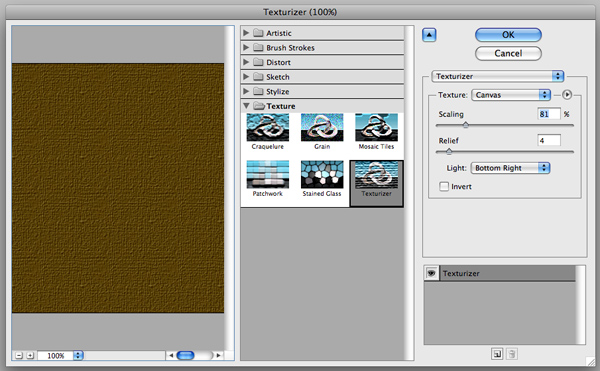

- 建立新图层，用 #66500f 填充
- Filter > Texture > Texturizer
- 设置图层属性为 Overlay


给底部添加些绿色
- 建立新图层，用 #4b4f3b填充
- 给图层添加遮罩
- 把图层属性设为 color， 透明度 60%


- 输入文字，Trajan Pro 字体
- 图层属性 #cb9328，透明度 10%
- 复制文字层，更改颜色为 #5e3f1c
- 图层属性为Overlay and 70% Opacity
- 复制文字层
- #cb9328， 图层属性 Linear Dodge (Add) and Opacity 30%.
- 给文字层添加遮罩，使他和上一步建立的图层互相融合

- 复制文字层，填充为黑色
- 转化为普通层
- Filter > Blur > Gaussian Blu 4px
- 浮动选区，删除文字形状，只留下外部模糊的部分
- 给文字和阴影加遮罩
- 用涂抹工具擦出烟雾效果，如果烟雾不明显。可以复制多个烟雾层相叠加
- 复制文字层，#dc9a08
- Filter > Blur > Gaussian Blur over it with Radius of 8px.
- 设置图层属性为 Soft Light
- 复制文字层， #dc9a08
- 浮动选区，内收 1px
- 图层属性 overlay
- 复制上一步创建的图层，3次
- 图层 copy1
Filter > Blur > Gaussian Blur set to 1px - 图层 copy2
Filter > Blur > Gaussian Blur set to 2px - 图层 copy3
Filter > Blur > Gaussian Blur set to 4px - 合并这3个图层，用涂抹工具擦出烟雾效果
- 寻找火焰素材，抠图，和文字融合